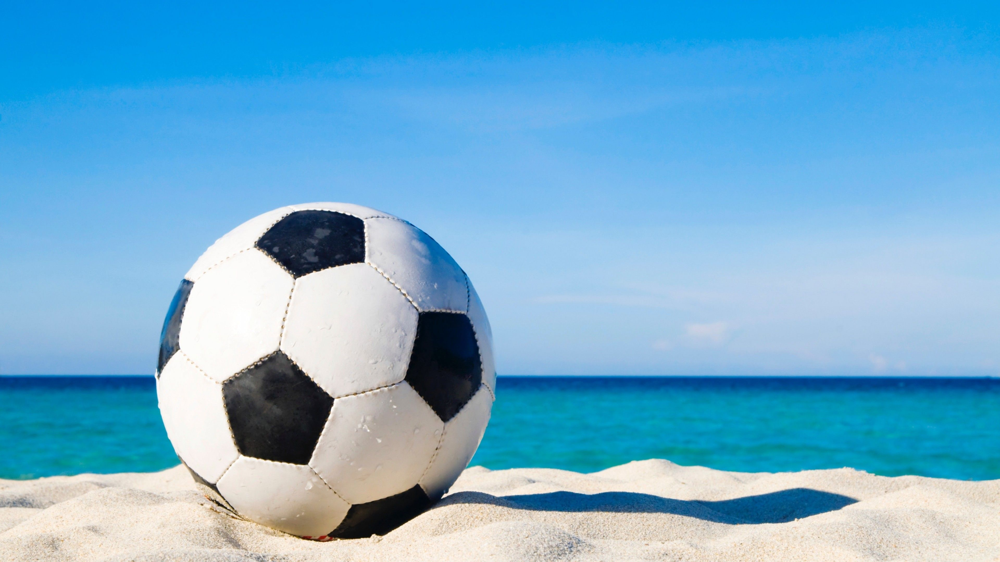
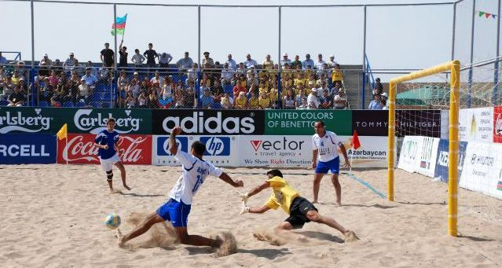
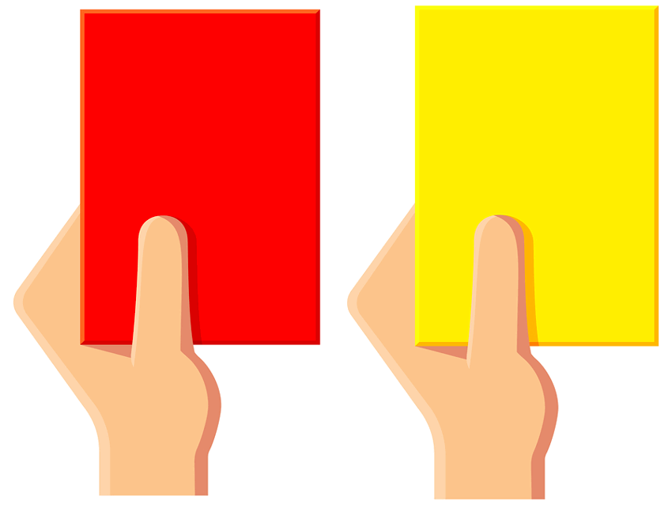

<!DOCTYPE Html>
<html>
    <head>
        <Title>Content Page</Title>
        <link rel="stylesheet" href="style.css">
    </head>
</html>
<body>
    <div class="Nav_Bar">
        <div class="Nav">
            <div class="Home">
                <a href="index.html" class="general-hyperlink">Home</a>
            </div>
            <div class="About">
                <a href="about.html" class="general-hyperlink">About Us</a>
            </div>
            <div class="Contact">
                <a href="contact.html" class="general-hyperlink">Contact Us</a>
            </div>  
        </div>
      </div>
      <br><br><br>
    <h1 id="general">General Play</h1>
  
    <div><p>The way the game of beach soccer is played is quite different from the sport on a field. On a field, you'd see eleven players on each side including a goalie. In beach
        soccer, you see only five players including a goalie. Another very important difference is the way the ball is moved between players. Due to the fact that the sport is 
        played on sand, they can't dribble the ball or pass as you would normally see on a pitch. They in fact have to juggle the ball and kick it into the air a lot to maneuver across
        the sand. Another thing that makes it a completely different sport from field soccer is the red and yellow card system which I will be covering in the rules of the game
         section. </p> </div>
          
         
         
         <br><br> <br> <br><br><br> <br> <br><br><br> <br> <br>


         <h1 id="rules">Rules of The Game</h1>
         <h2>The basic rules of beach soccer are pretty similar to field soccer but they are not the same</h2>
         <h3>Some examples:</h3>
        <div> <p>
             <ul>
                 <li>The games are split into three 12 minute periods instead of two 45 minute halfves. However, the referee still pauses the clock in the event of a goal, foul, injury or if the referee 
                     believes that a team is wasting time. </li>
                 <li>The pitch itself is much smaller than a regular and must measure 35m-37m by 26m-28m and the goals must be 2.2m high and 5.5m high.</li> 
                 <li>The ball has the same dimensions as a regular soccer/football but it is lighter than it's field base brother</li>
                 <li>The number of players is also different as there are only 5 players per team including a goalie instead of 11.</li>
                 <li>If a player receives a yellow card, they must be taken off and can come back on after 2 minutes. If a player receives a red card, they are dismissed from the game and can be replaced after 2 minutes</li>
                 <li>There is no offside rule in beach soccer</li>
                </ul>
         </p></div>
        
        
        
               <br><br><br> <br><br><br> <br> <br><br><br> <br> <br> <br> <br>
        <h1 id="differences">Differences to The Traditional Sport</h1>
          <h2>I've already covered a few differences earlier on this page but let me sum it up for you... </h2>
          <h3>There are 6 main differences between the two sports:</h3>
          <div><p>
              <ol>
                  <li>The pitch in beach soccer much smaller</li>
                  <li>There are only 4 players plus a goalie</li>
                  <li>The games are split into three 12 minutes periods</li>
                  <li>There is no offside rule</li>
                  <li>The yellow card system is completely different</li>
                  <li>IT'S PLAYED ON SAND!!</li>
              </ol>
          </p></div>
          
</body>